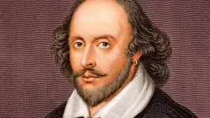

Biografia de William Shakespeare:
Data de Publicação: 28 de setembro de 2023
William Shakespeare (1564-1616) foi um dramaturgo e poeta inglês. Autor de tragédias famosas como "Hamlet", "Otelo", "Macbeth" e "Romeu e Julieta", foi considerado uma das maiores figuras literárias da língua inglesa. Shakespeare escreveu suas obras para um pequeno teatro no final do século XVI e início do XVII. Quatrocentos anos mais tarde suas peças ainda encantavam plateias em todo o mundo. William Shakespeare nasceu em Stratford-upon-Avon, no condado de Warwick, Inglaterra, no dia 23 de abril de 1564. Filho de John Shakespeare e de Mary Arden, seu pai foi comerciante de lã e chegou a tesoureiro e prefeito de Stratford. Em 1586, o jovem Shakespeare se envolveu com más companhias sendo obrigado a deixar a família e se refugiar em Londres. Trabalhou em várias funções, entre elas a de guardador de cavalos na porta do teatro de James Burbage, o primeiro teatro de Londres. Logo estava prestando serviços nos bastidores. Nessa época, período do reinado de Elizabeth I, Londres vivia uma intensa atividade artística. Shakespeare estudou muito e leu autores clássicos, novelas, contos e crônicas, que foram fundamentais para sua formação de dramaturgo. Início da carreira de dramaturgo Shakespeare passou a ser o copista oficial da companhia e também representava pequenos papéis. Em 1589 já adaptava peças de autores anônimos e escrevia o maior número das peças apresentadas no Globe Theatre. Durante as diversas temporadas interrompidas pela peste negra, Shakespeare começou a se destacar como ator e dramaturgo.
Leia mais 